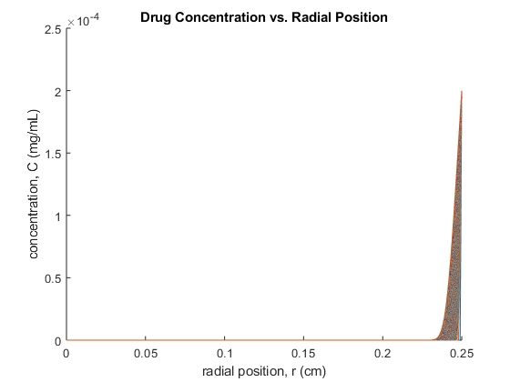
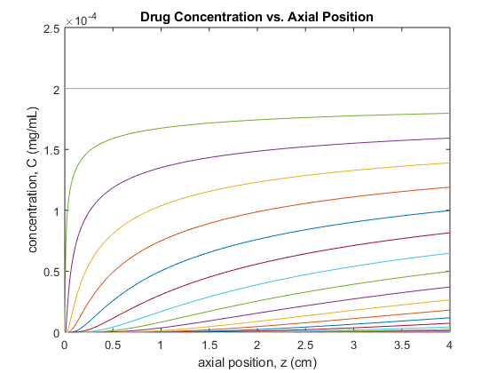
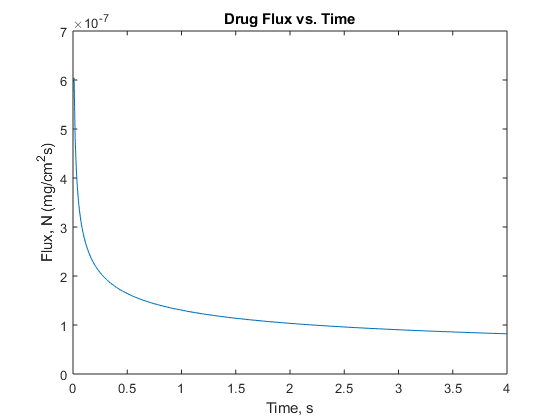

Contents
clear all
close all
Euler numerical methods - plot drug concentration
D = 3.94e-6;
r0 = 0;
rEnd = 0.25;
z0 = 0;
zEnd = 4;
dz = 0.01;
dr = 1e-3;
z = z0:dz:zEnd;
r = r0:dr:rEnd;
M = floor((zEnd-z0)./dz);
N = floor((rEnd-r0)./dr );
C = zeros(N+1,M+1);
C(end,:) = 2e-4;
for j = 1:M
for i = 2:N
V = 14.26.*(1-((r(i).^2)./(rEnd.^2)));
C(i,j+1) = C(i,j) + ((D.*dz)./(V.*dr)).*(((C(i+1,j) - C(i-1,j))./(2.*r(i))) + ((C(i+1,j) - 2.*C(i,j) +C(i-1,j)))./dr);
end
C(1,j+1) = C(3,j+1);
end
figure(1)
hold on
plot(r, C)
hold off
xlabel('radial position, r (cm)');
ylabel('concentration, C (mg/mL)');
title('Drug Concentration vs. Radial Position');
figure(2)
plot(z, C)
xlabel('axial position, z (cm)');
ylabel('concentration, C (mg/mL)');
title('Drug Concentration vs. Axial Position');
 
Plot of drug flux in tissue over time
C0 = 2e-4;
Pe = (7.13*0.5)/D;
Ny = ((0.6783.*D.*C0)./rEnd).*((Pe.*(rEnd./z)).^(1/3));
figure(3)
plot(z , Ny);
title('Drug Flux vs. Time');
xlabel('Time, s');
ylabel('Flux, N (mg/cm^{2}s)');
Navg = cumtrapz(z,Ny);
t = (Navg*(2*pi*0.25))/(30e-3*3);
